содержание
Трофеи
Трофеи
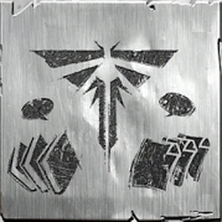
Трофеи — определённые дополнительные задания в игре The Last of Us, фиксирующие
прогресс по прохождению и нахождению секретов игры. Всего в игре 50 трофеев — 24 основных и 26
из дополнений.
Бронзовые трофеи получить достаточно просто. Обычно их получение достигается простым прохождением сюжетной линии с выполнением несложных заданий. Доступно 22 бронзовых трофея.
Для получения трофеев этого типа уже необходимо обладать некоторой сноровкой и выполнить более сложные действия. Необходимо просто быть внимательным. Доступно 18 серебряных трофеев.
Получение золотых трофеев займёт длительное время, необходимо доскональное знание игры и её секретов. Доступно 9 золотых трофеев.
В игре всего один платиновый трофей — «Это всё неспроста». Для его получения необходимо получить все остальные достижения основной игры без дополнений.
Виды трофеев
Бронзовый трофей
Бронзовые трофеи получить достаточно просто. Обычно их получение достигается простым прохождением сюжетной линии с выполнением несложных заданий. Доступно 22 бронзовых трофея.
Серебряный трофей
Для получения трофеев этого типа уже необходимо обладать некоторой сноровкой и выполнить более сложные действия. Необходимо просто быть внимательным. Доступно 18 серебряных трофеев.
Золотой трофей
Получение золотых трофеев займёт длительное время, необходимо доскональное знание игры и её секретов. Доступно 9 золотых трофеев.
Платиновый трофей
В игре всего один платиновый трофей — «Это всё неспроста». Для его получения необходимо получить все остальные достижения основной игры без дополнений.
Список трофеев
Оригинальная версия
| Иконка | Название | Тип | Краткое описание |
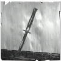 |
Это всё неспроста | Получите все трофеи | |
| Собиратель | 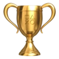 |
Соберите все находки | |
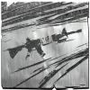 |
Полный арсенал | Максимально улучшите все виды оружия | |
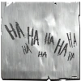 |
Больше у меня нет | Переживите все шутки Элли (секретный) | |
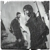 |
Что бы ни случилось: максимальный | Завершите игру на максимальном уровне сложности | |
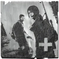 |
Что бы ни случилось: максимальный + | Завершите игру на максимальном + уровне сложности | |
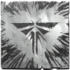 |
Цикада | Пройдите путь «Цикады» | |
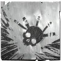 |
Охотник | Пройдите путь охотника | |
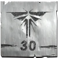 |
Никто не забыт | Найдите все медальоны «Цикад» | |
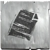 |
Свидетель эпохи | Найдите все артефакты | |
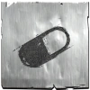 |
Универсальный боец | Максимально улучшите все способности Джоэла с помощью добавок | |
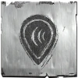 |
Поговорим? | Примите участие во всех необязательных разговорах. | |
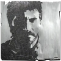 |
Что бы ни случилось: средний | Завершите игру на среднем уровне сложности | |
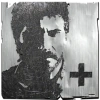 |
Что бы ни случилось: средний + | Завершите игру на среднем + уровне сложности | |
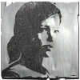 |
Что бы ни случилось: высокий | Завершите игру на высоком уровне сложности | |
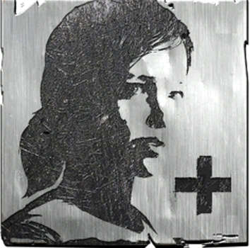 |
Что бы ни случилось: высокий + | Завершите игру на высоком + уровне сложности | |
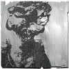 |
Что бы ни случилось: лёгкий | 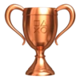 |
Завершите игру на низком уровне сложности. |
.webp) |
Что бы ни случилось: лёгкий + | Завершите игру на низком + уровне сложности | |
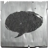 |
Борись и выживай | Найдите все комиксы | |
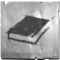 |
Ходячая энциклопедия | Найдите все справочники | |
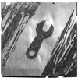 |
На все руки мастер | Изготовьте все предметы | |
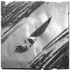 |
Медвежатник | Откройте все запертые двери | |
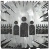 |
Популярность | В режиме «Противостояние» доведите численность своего клана до 40 человек (мультиплеер) | |
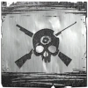 |
Знание основ | Победите в обоих режимах «Набег» и «Выживание», найденных посредством поиска игр (мультиплеер) |
Дополнения
| Иконка | Название | Тип | Краткое описание |
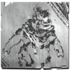 |
Прохождение: реализм | Пройдите игру в режиме «реализм» | |
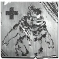 |
Прохождение: реализм + | Пройдите игру в режиме «реализм +» | |
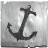 |
Верфь | Завершите игру на карте «Верфь», ни разу не погибнув и уничтожив или казнив не менее 3 противников (мультиплеер) | |
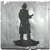 |
Капитолий | Завершите игру на карте «Капитолий», ни разу не погибнув и уничтожив или казнив не менее 3 противников (мультиплеер) | |
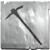 |
Угольная шахта | Завершите игру на карте «Угольная шахта», ни разу не погибнув и уничтожив или казнив не менее 3 противников (мультиплеер) | |
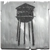 |
Водонапорная башня | Завершите игру на карте «Водонапорная башня», ни разу не погибнув и уничтожив или казнив не менее 3 противников (мультиплеер) | |
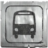 |
Книжный магазин | Завершите игру на карте «Книжный магазин», ни разу не погибнув и уничтожив или казнив не менее 3 противников (мультиплеер) | |
| Автопарк | Завершите игру на карте «Автопарк», ни разу не погибнув и уничтожив или казнив не менее 3 противников (мультиплеер) | ||
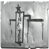 |
Родной город | Завершите игру на карте «Родной город», ни разу не погибнув и уничтожив или казнив не менее 3 противников (мультиплеер) | |
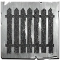 |
Пригород | Завершите игру на карте «Пригород», ни разу не погибнув и уничтожив или казнив не менее 3 противников (мультиплеер) | |
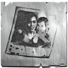 |
Не уходи (максимальный) | Пройдите дополнение Left Behind на максимальном уровне сложности | |
| Не уходи (низкий) | Пройдите дополнение Left Behind на низком уровне сложности | ||
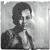 |
Не уходи (средний) | Пройдите дополнение Left Behind на среднем уровне сложности | |
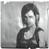 |
Не уходи (высокий) | Пройдите дополнение Left Behind на высоком уровне сложности | |
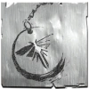 |
Друзья навек | Примите участие во всех необязательных разговорах в дополнении Left Behind | |
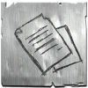 |
Подчистую | Соберите все находки в дополнении Left Behind | |
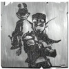 |
Никто не идеален | Сыграйте в Jax X Combat Racing в «Аркаде Раджи» (секретный) | |
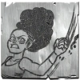 |
Энджел Найвс | Победите Чёрного клыка, не получив урона (секретный) | |
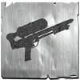 |
Мастерство не прольёшь | Победите в дуэли на водяных ружьях (секретный) | |
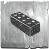 |
Суперчемпионка | Победите в состязании по метанию кирпичей (секретный) | |
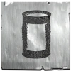 |
Вернувшийся налётчик | Завершите игру в режиме «Набег» на карте «Верфь», «Капитолий», «Водонапорная башня» или «Угольная шахта» (мультиплеер) | |
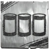 |
Брошенный налётчик | Завершите игру в режиме «Набег» на карте «Книжный магазин», «Родной город», «Пригород» или «Автопарк» (мультиплеер) | |
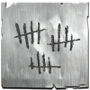 |
Вернувшийся эксперт по выживанию | Завершите игру в режиме «Выживание» на карте «Верфь», «Капитолий», «Водонапорная башня» или «Угольная шахта» (мультиплеер) | |
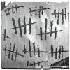 |
Брошенный эксперт по выживанию | Завершите игру в режиме «Выживание» на карте «Книжный магазин», «Родной город», «Пригород» или «Автопарк» (мультиплеер) | |
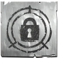 |
Вернувшийся дознаватель | Завершите игру в режиме «Допрос» на карте «Верфь», «Капитолий», «Водонапорная башня» или «Угольная шахта» (мультиплеер) | |
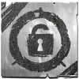 |
Брошенный дознаватель | Брошенный дознаватель |